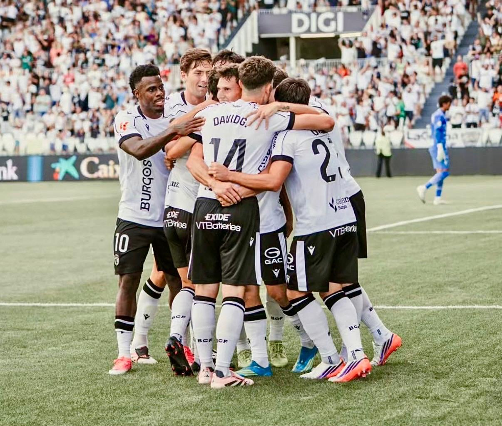

En las 8 jornadas que llevamos el Burgos CF nos ha dejado claro que tiene mucha pólvora. El claro reflejo de ello es la eficacia del equipo una de las mas altas de la categoría. Llega poco y convierte mucho.
Las individuales han sido hasta el Almería las que han definido los partidos. Esto es síntoma de que el Burgos CF está creciendo. Solo los equipos grandes son los que poseen jugadores determinantes. Lo más caro y difícil de conseguir en el fútbol.
Por suerte, hoy los burgaleses tienen perfiles de muchísimo nivel como Forés, Llabres, Karrika… los cuales están ya marcando la diferencia.
Precisamente este tipo de futbolistas son los que dan vida a los equipos a lo largo de una temporada. El año pasado ya lo vimos con David González, Fer Niño o incluso Mario González. Su aparición en momentos clave, cuando el equipo más lo necesitaba, fue lo que llevó al conjunto blanquinegro a los 72 puntos históricos.
Es evidente que el conjunto es lo principal, pero para aspirar alto, como es en el caso del Burgos, el ascenso a Primera División, es necesario tener calidad individual.
En la presente temporada, el cuadro castellano ha aumentado el nivel de su plantilla con la adquisición de propiedades procedentes de Primera División.
Los movimientos de Michu no solo han sido interesantes por nombre, sino también por distribución. Ha sabido compensar el equipo, ya que ha fichado hombres determinantes en cada línea. Es decir, ha reemplazado una columna vertebral por otra incluso mejor, que se ajusta más al juego de Sergio Francisco.
Si solo traes a hombres de ataque, dependes de ellos para ganar; en cambio, si creas una estructura sólida, ganas en equipo. Y es que la primera piedra de este año no la ha puesto Sergio Francisco, sino Miguel Pérez Cuesta, “Michu”.
Hablamos de Oier Luengo en defensa, Unai Vencedor en el medio, Forés, Llabres y Karrika en ataque. En añadido a lo que ya tenía el cuadro blanquinegro con Curro Sánchez, Grego Sierra o David González.
La unión hace la fuerza
La base de cualquier proyecto es la estructura general. Si no está completa, el equipo no funciona.
Al principio de temporada, la casa se empezó a construir por el tejado; luego se puso la base con Oier y se ha unido con Unai Vencedor, la pieza que ha hecho cuadrar el puzle.
Las estrellas están bien, pero lo que realmente importa es el conjunto. El partido en Almería es el claro reflejo de ello. El orden hace jugar y las individuales deciden. Sin juego no hay nombres. Con juego y nombres, el fútbol reluce.
Argumentos sobre la mesa sobran. Únicamente falta sacarles aún más brillo.